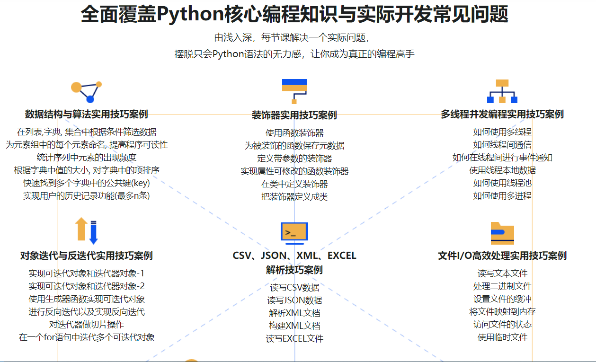
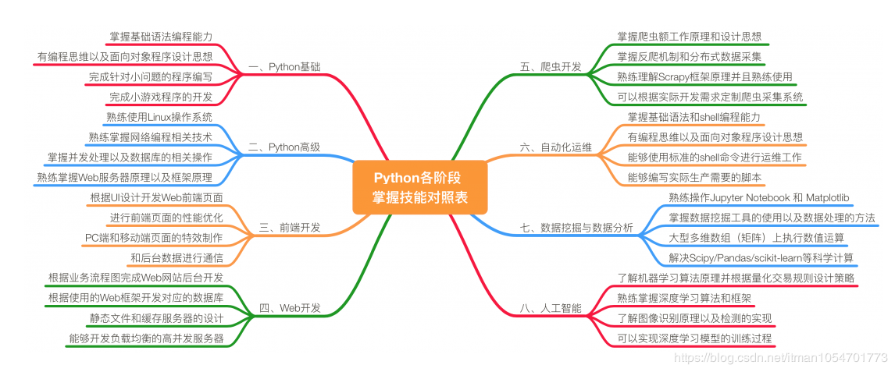
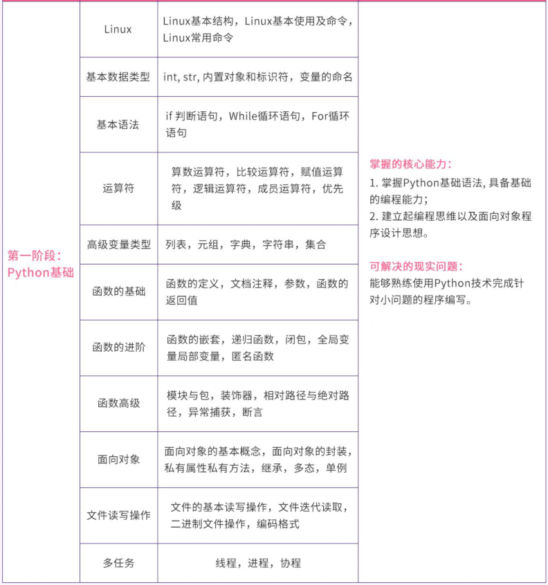
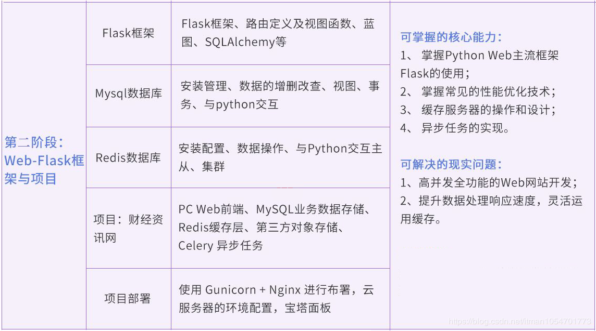
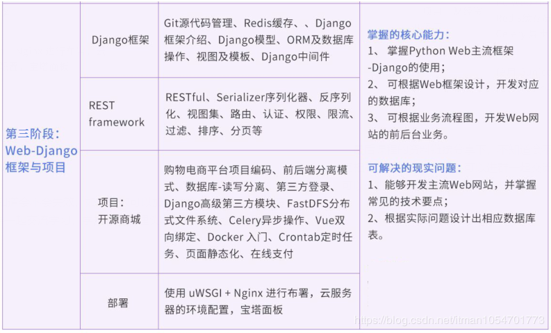
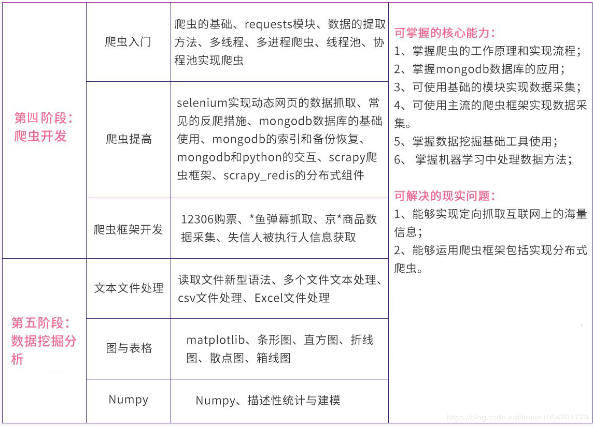

整个课程都看完了，这个课程的分享可以往下看，下面有链接，之前做java开发也做了一些年头，也分享下自己看这个视频的感受，单论单个知识点课程本身没问题，大家看的时候可以关注下面几点：
1、为了追求精简简洁牺牲了部分实用性，导致不足以达到某些工作的需要
2、大部分是实战课程弱化了其他技术点的不足，无法全面了解python，但是很多都是刚接触python的(很致命)
3、因为是录播课程导致某些问题不能及时去解决，没人交流（这个最烦）
所以真要把python学好，下面这些技术点不同阶段也是应该掌握的 (Ps：费了好长时间弄的，厚着脸皮求个赞)也整理了些对应课程以及视频资料看最下面链接。 
第一阶段
每个阶段在图片面大概也给大家总结，需要掌握的能力，跟可以解决的问题，可能做不到面面俱到，如有不适，希望大家理解，也是python小白希望跟更多的小伙伴交流

第二阶段

第三阶段

第四及第五阶段

最后课程的资料链接分享下
百度网盘 提取码：9qbr
不知道会不会失效，如果失效，可以搜索企鹅号 865581497 发给你或者扫下二维码吧，如果没有及时回复也希望能理解，同时也推荐一个学习群，群里收集了阶段性的资料，大家可以进群一起学习交流，学技术需要埋头写也需要相互指点，或者有大牛指导，可以少走点弯路，在这个群里收益良多，也给大家推荐下。